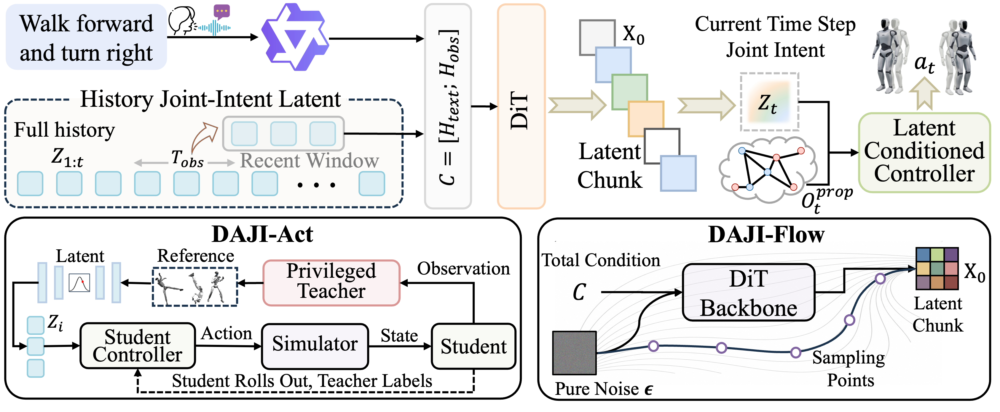
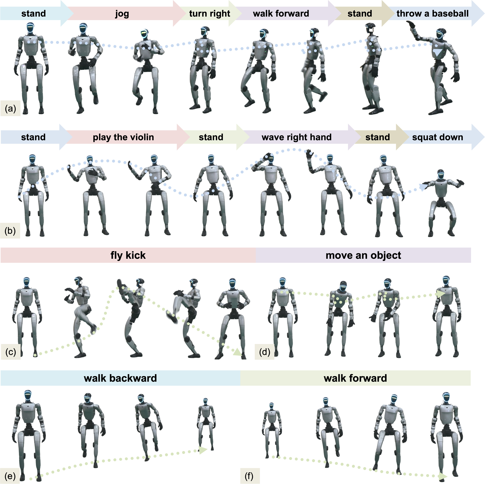
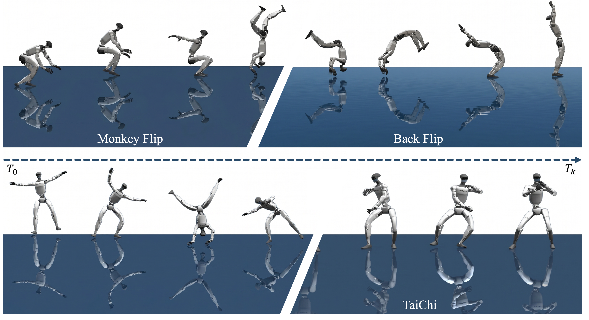

Anticipatory Intent
DAJI encodes upcoming support shifts, contact transitions, and balance preparation before the visible motion transition is complete. The system prepares the body before the body visibly moves.
DAJI: Dynamics-Aligned Joint Intent
An anticipatory joint-intent interface for streaming language-conditioned humanoid control, built on a simple claim: like human motor behavior, control should first form intent, then execute.
XXX Lab XXX University XXX Research
Natural language is an intuitive interface for humanoid robots, yet streaming whole-body control requires control representations that are executable now and anticipatory of future physical transitions. Existing language-conditioned humanoid systems typically generate kinematic references that a low-level tracker must repair reactively, or use latent or action policies whose outputs do not explicitly encode upcoming contact changes, support transfers, and balance preparation.
We propose DAJI, a hierarchical framework that learns an anticipatory joint-intent interface between language generation and closed-loop control. DAJI-Act distills a future-aware teacher into a deployable diffusion action policy through student-driven rollouts, while DAJI-Flow autoregressively generates future intent chunks from language and intent history. Experiments show strong results in anticipatory latent learning, single-instruction generation, and streaming instruction following.
The paper's central claim is not just that DAJI is a better generator. It argues that language-conditioned humanoid control needs a different interface: one that helps the body prepare for what comes next. The future paradigm is not to generate a brittle reference and repair it afterwards, but to generate intent first and let execution decode that intent under feedback, much closer to how humans prepare movement before it appears.
DAJI encodes upcoming support shifts, contact transitions, and balance preparation before the visible motion transition is complete. The system prepares the body before the body visibly moves.
DAJI-Flow generates joint-intent latents directly, and those latents are consumable by DAJI-Act at deployment. The generator is not producing a display-only motion description; it is producing a deployable control interface.
DAJI-Flow predicts future intent chunks while DAJI-Act executes them with live proprioception, supporting long-horizon instruction following through a clean two-stage pattern: intention first, action second.
DAJI separates generation and execution through a shared joint-intent space. The generator produces low-frequency future intent chunks, and the action policy decodes each latent into stable whole-body actions at control time. This is the key design difference from reference-driven pipelines: the output of generation is already the control interface used at deployment.

Distills a future-aware privileged teacher into a deployable diffusion action policy.
Autoregressively predicts future joint-intent chunks from language and recent intent history.
Replaces reactive reference tracking with an executable, anticipatory latent command space.
The evaluation focuses on whether the learned latent behaves as a deployable anticipatory command: executable under feedback control, predictive of upcoming motion, and stable over long-horizon rollouts. DAJI improves language-motion quality while preserving a key systems property: the flow-generated latent can be directly deployed through DAJI-Act rather than converted into a fragile external reference.


| Method | MM-D ↓ | R@1 ↑ | R@2 ↑ | R@3 ↑ | FID ↓ | Div ↔ | MM ↑ | Succ. (%) ↑ |
|---|---|---|---|---|---|---|---|---|
| GT | 0.968 | 0.720 | 0.878 | 0.919 | 0.000 | 1.372 | -- | 100.00 |
| GT (Sim) | 1.002 | 0.687 | 0.847 | 0.900 | 0.059 | 1.320 | -- | 94.50 |
| LangWBC | 1.462 | 0.205 | 0.328 | 0.412 | 0.510 | 1.045 | 0.365 | 70.50 |
| ECHO | 1.318 | 0.288 | 0.432 | 0.528 | 0.378 | 1.148 | 0.462 | 82.00 |
| FRoM-W1 | 1.392 | 0.245 | 0.380 | 0.471 | 0.445 | 1.095 | 0.412 | 76.00 |
| RoboGhost | 1.275 | 0.325 | 0.468 | 0.562 | 0.335 | 1.178 | 0.501 | 85.00 |
| MotionStreamer | 1.225 | 0.378 | 0.542 | 0.645 | 0.278 | 1.205 | 0.585 | 87.50 |
| TextOp | 1.175 | 0.425 | 0.595 | 0.698 | 0.225 | 1.228 | 0.628 | 90.00 |
| DAJI | 1.093 | 0.549 | 0.711 | 0.796 | 0.147 | 1.291 | 0.847 | 94.42 |
DAJI improves both language-motion alignment and rollout executability because the generator produces controller-distilled intents rather than external kinematic references.
| Method | R@3 ↑ | FID ↓ | Div ↔ | MM-D ↓ | Transition FID ↓ | Transition Div ↔ | PJ ↓ | MJ ↓ |
|---|---|---|---|---|---|---|---|---|
| GT | 0.654 | 0.000 | 1.299 | 1.299 | 0.000 | 1.182 | 0.043 | 0.015 |
| GT (Sim) | 0.625 | 0.059 | 1.287 | 1.157 | 0.054 | 1.153 | 0.090 | 0.022 |
| TextOp | 0.287 | 0.538 | 0.985 | 1.514 | 0.594 | 0.784 | 0.231 | 0.156 |
| DAJI | 0.443 | 0.152 | 1.219 | 1.237 | 0.236 | 1.033 | 0.115 | 0.054 |
The advantage of DAJI becomes clearer in streaming rollout, where anticipatory intent helps the controller prepare support transfer, posture adaptation, and transition smoothness before the visible change is complete.
Single-instruction generation and long-horizon streaming instruction following across real-world and simulated humanoid deployments. Each video is conditioned on a natural language instruction and executed through the DAJI joint-intent interface.
@article{daji2026,
title = {Before the Body Moves: Learning Anticipatory Joint Intent for Language-Conditioned Humanoid Control},
author = {XXX XXX and XXX XXX and XXX XXX and XXX XXX},
journal = {arXiv},
year = {2026}
}